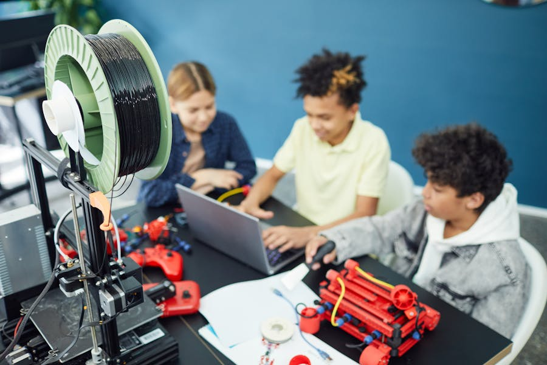
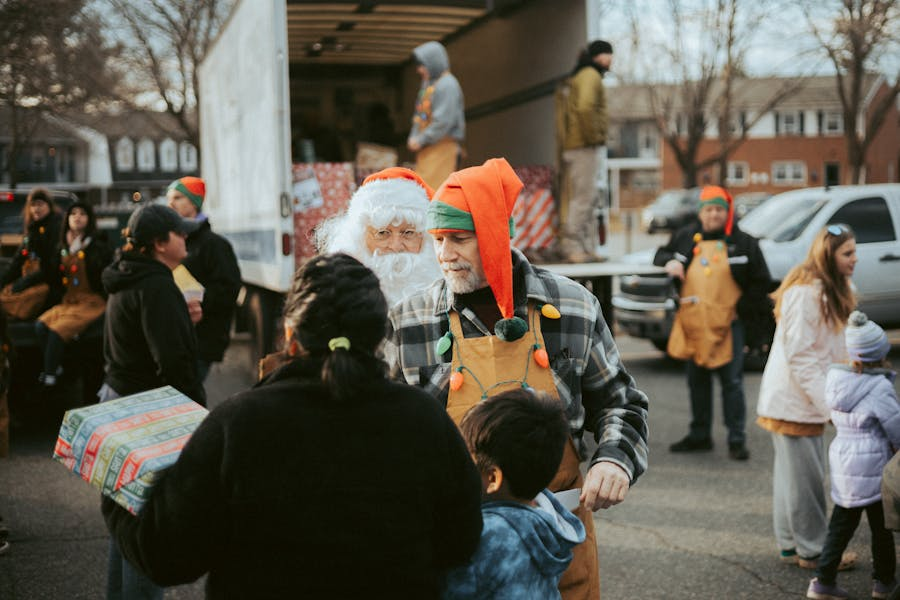
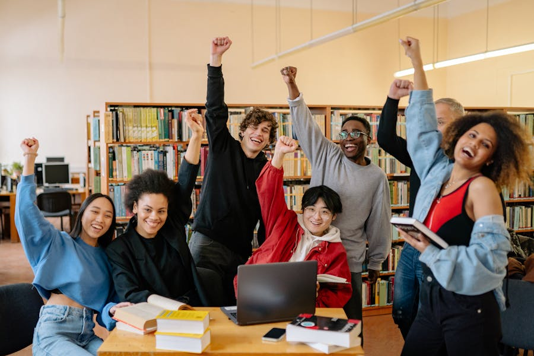
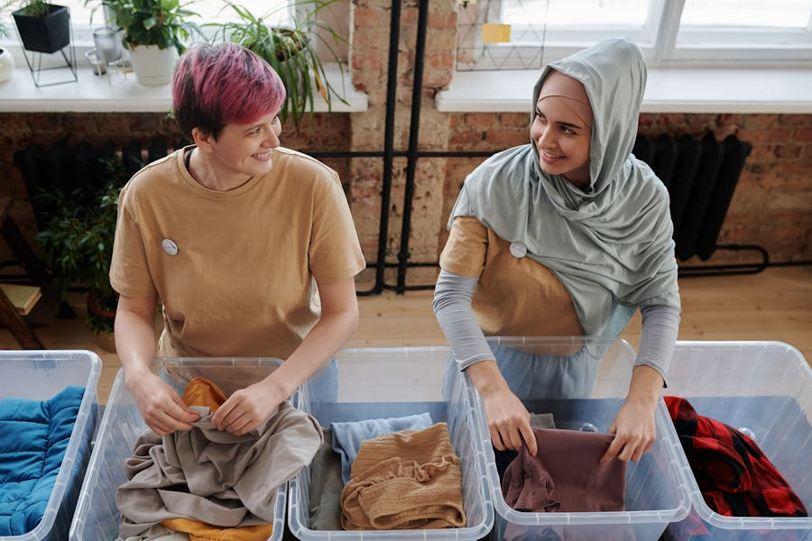
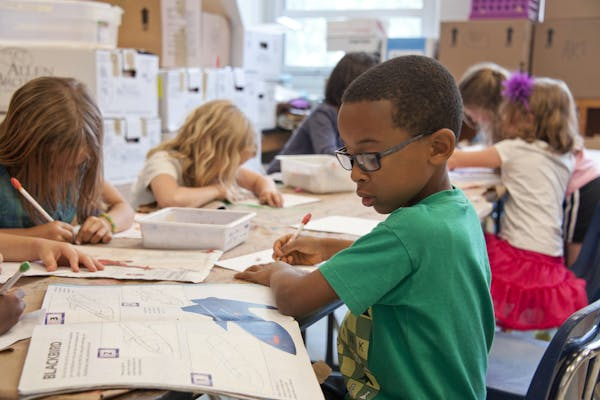
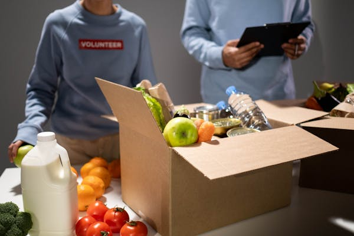
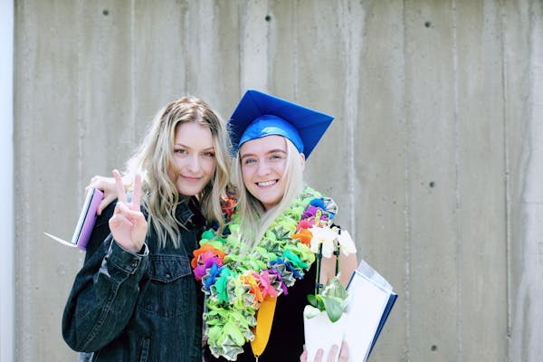
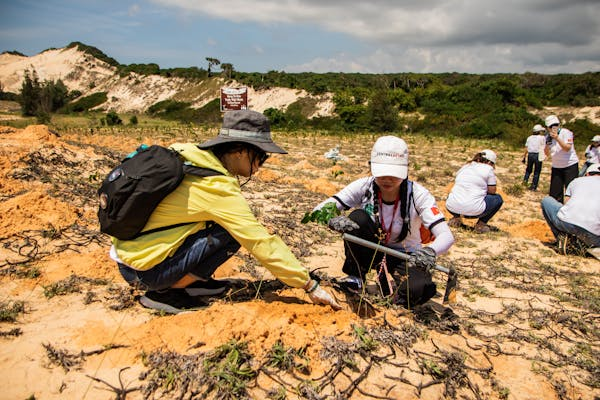
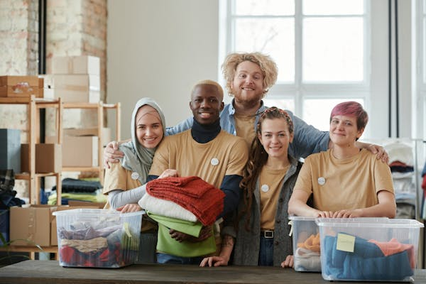
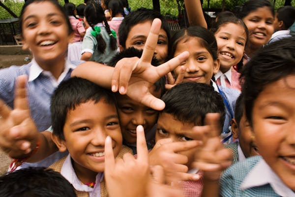

Conheça as iniciativas que estão transformando vidas em todo o Brasil.
Cada projeto foi cuidadosamente selecionado para garantir impacto real
e transparência total. Você pode contribuir como voluntário ou doador!
Como Funciona
Para Voluntários
Escolha um Projeto: Navegue pelos projetos e encontre uma causa que combine com
você
Cadastre-se: Preencha o formulário de cadastro com suas informações
Receba o Contato: O responsável pelo projeto entrará em contato com você
Comece a Transformar: Inicie sua jornada como voluntário!
Iniciativas em andamento que precisam do seu apoio agora!
Educação para Todos

Crianças aprendendo programação no projeto
Sobre o Projeto
Oferecemos reforço escolar e aulas de informática para crianças de comunidades
carentes. O objetivo é garantir que todos tenham acesso a uma educação de
qualidade e às ferramentas tecnológicas do século XXI.
Combatemos a fome através da distribuição de cestas básicas, refeições
comunitárias e oficinas de educação nutricional. Ninguém deveria dormir
com fome em um país tão rico como o Brasil.
Promovemos o reflorestamento de áreas urbanas degradadas, plantando árvores
nativas e criando espaços verdes nas comunidades. Além de melhorar o clima,
geramos conscientização ambiental.
Localização
Belo Horizonte - MG | Região Metropolitana
Público-Alvo
Comunidades urbanas e escolas públicas
Meta de Plantio
35% alcançado
3.500 árvores plantadas de 10.000
Precisa de
Voluntários para mutirões de plantio (aos sábados)
Engenheiros ambientais e agrônomos
Doações de mudas e ferramentas de jardinagem
Apoio logístico e transporte
Impacto Esperado
Plantar 10.000 árvores nativas até dezembro de 2025
Oferecemos cursos profissionalizantes gratuitos para jovens de baixa renda,
preparando-os para o mercado de trabalho. Incluímos desde soft skills até
habilidades técnicas em áreas de alta demanda.
Localização
Salvador - BA | Subúrbio Ferroviário
Público-Alvo
Jovens de 16 a 24 anos
Meta de Arrecadação
58% alcançado
R$ 35.000 arrecadados de R$ 60.000
Precisa de
Instrutores voluntários (presencial e online)
Profissionais para mentorias individuais
Doações de equipamentos (computadores, projetores)
Empresas parceiras para estágios
Impacto Esperado
Capacitar 200 jovens e inserir 70% no mercado de trabalho
Oferecemos acolhimento, apoio psicológico e jurídico para mulheres vítimas
de violência doméstica. Trabalhamos para que elas recuperem sua autonomia
e segurança.
Localização
Recife - PE | Centro
Público-Alvo
Mulheres vítimas de violência doméstica e seus filhos
Meta de Arrecadação
56% alcançado
R$ 28.000 arrecadados de R$ 50.000
Precisa de
Psicólogos e assistentes sociais voluntários
Advogados para orientação jurídica
Doações de roupas, móveis e itens de higiene
Contribuições para manutenção do abrigo
Impacto Esperado
Acolher e apoiar 150 mulheres e suas famílias em 2025

Campanha de Natal 2024 - Mais de 2.000 crianças atendidas
Resultados Alcançados
2.137 crianças receberam presentes
800 cestas básicas distribuídas
R$ 150.000 arrecadados
350 voluntários participaram
Período: Novembro a Dezembro de 2024
Status: ✅ Concluído com sucesso
Biblioteca Comunitária do Parque Verde

Biblioteca inaugurada em agosto de 2024
Resultados Alcançados
Biblioteca construída e equipada
3.500 livros doados e catalogados
20 computadores instalados
Atende 500+ pessoas por mês
Período: Janeiro a Agosto de 2024
Status: ✅ Concluído e em operação
Campanha Agasalho 2024

Distribuição de agasalhos no inverno de 2024
Resultados Alcançados
5.000 peças de roupa distribuídas
1.200 cobertores doados
800 pessoas em situação de rua atendidas
180 voluntários mobilizados
Período: Junho a Julho de 2024
Status: ✅ Concluído com sucesso
Galeria Multimídia
Veja nossos projetos em ação através de imagens e vídeos.
Vídeos dos Projetos
Projeto Educação para TodosMutirão de Plantio - Verde Vivo
Fotos dos Projetos em Ação

Aula de robótica no projeto Educação

Entrega de cestas básicas - Alimente uma Vida

Formatura do curso de Capacitação Profissional

Área sendo reflorestada pelo projeto Verde Vivo

Nossa equipe de voluntários dedicados

Sorrisos que motivam nosso trabalho
Podcast Apoia Hub
Episódio #01 - Como começar no voluntariadoEpisódio #02 - Histórias de transformação
Faça Parte Dessa Transformação
Escolha como você quer contribuir e comece hoje mesmo a fazer a diferença
na vida de milhares de pessoas. Cada ação conta, cada gesto importa!